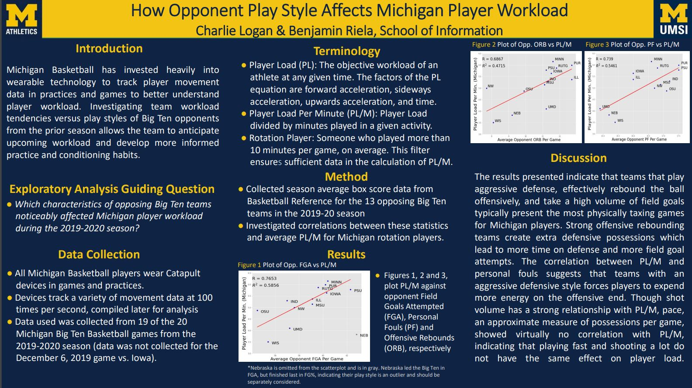
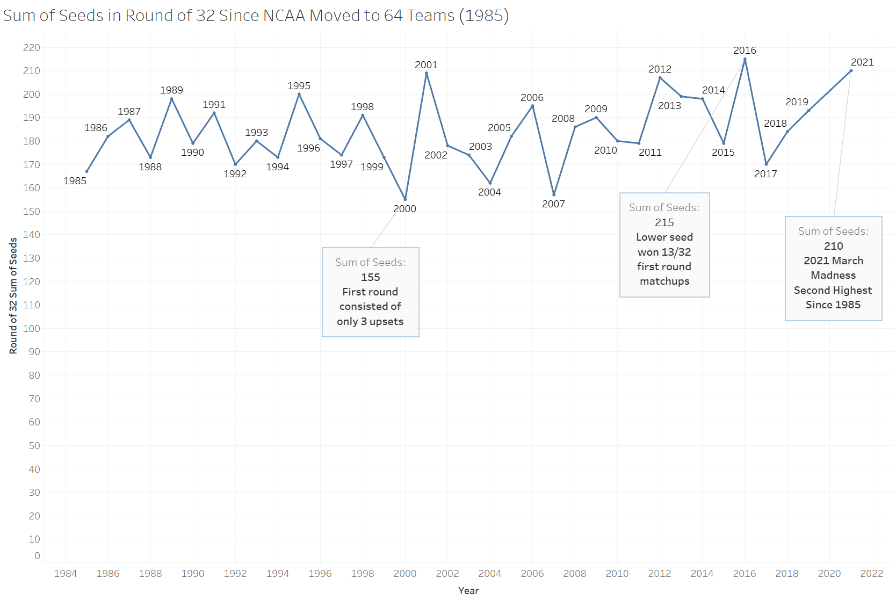

NCAA Projects
This section includes a poster presentation from my work with the Men's Basketball team and an analysis of NCAA tournament first round upsets
Player Load Indicators
Mouse Over to View Poster

March Madness 1st Round Upset Analysis
The 2021 NCAA Tournament 1st round had what seems like a historic amount of upsets, but just how historic was it? I went back to 1985 when the NCAA moved its tournament to 64 teams and took the sum of seeds (from 1-16) for all of the teams that made the second round. Turns out 2021 is the second highest of all time, coming just 5 seed points behind 2016, another year with a historically surprising first round.